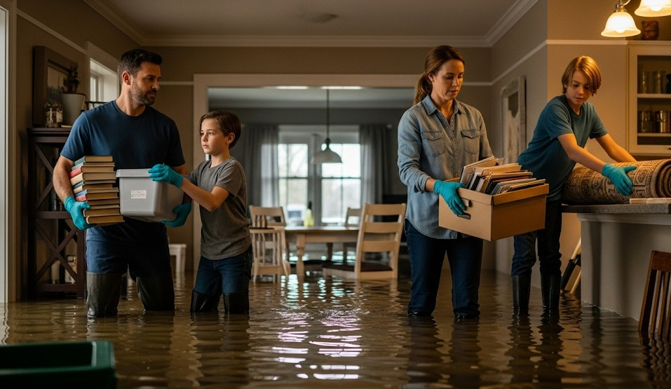

Flood Readiness and Recovery
Objective
Reduce flood damage and keep people safe by acting before water rises, moving early, and recovering with proper decontamination.
Scenario (Example)
Example: 10–15 cm of rain forecast in 24 hours; river already high. Basement has a history of seepage. You may need to evacuate by evening.
Before (6–24 Hours Out)
- Protect Utilities. Raise appliances off the floor. Shut off breakers to basement outlets if needed. Test sump pump and verify battery backup.
- Barriers. Stack sandbags in a “U” with plastic sheeting toward water. Overlap seams like shingles. Keep doorways clear for exit.
- Move Valuables. Elevate boxes and electronics. Put documents in waterproof bags.
- Vehicle. Park on higher ground facing out. Keep the tank at least half full.
- Comms & Routes. Check alerts; identify two ways out that don’t cross low spots.
During
- Leave early if evacuation is advised. Don’t wait for knee-deep water.
- Never drive through moving water. “Turn Around, Don’t Drown.” 30 cm can move a car.
- If trapped upstairs, move to the highest interior room; avoid attics without exits. Signal from windows with lights or bright cloth.
After (Recovery)
- Safety First. Assume water is contaminated (sewage, fuel). Wear gloves, boots, and an N95. Shut power at the main before entering a wet area.
- Document. Take photos/video before cleanup for insurance. Keep receipts.
- Remove Water & Mud. Pump gradually (no more than 1/3 at a time to protect walls). Shovel mud; hose from clean to dirty areas.
- Dry & Disinfect. Remove soaked drywall below the waterline. Run fans/dehumidifiers; disinfect hard surfaces with proper solutions.
- Mold Clock. 24–48 hours is the window—get materials drying fast.
Real Example
A homeowner with a battery-backed sump kept water to 2–3 cm during a flash flood, saving the furnace. Because they parked on the street crown, the car stayed dry and became the family’s mobile power/comm hub.
Checklist
- Sump pump + battery backup tested
- Sandbags + plastic sheeting
- Work gloves, boots, N95, bleach/cleaners
- Photos of rooms for “before” reference
- Go-bags and evacuation route plan
Contingencies
- Water rising faster than pumps → cut power, grab go-bags, go to higher ground immediately.
- Gas smell or electrical arcing → evacuate and call utility from outside.
- No help for 24 h → conserve batteries; prioritize drying and documentation.
After-Action
Update grading and gutters; install backflow valves; raise outlets or appliances; keep sandbags staged before the next season.
← Previous | All Articles | Next →